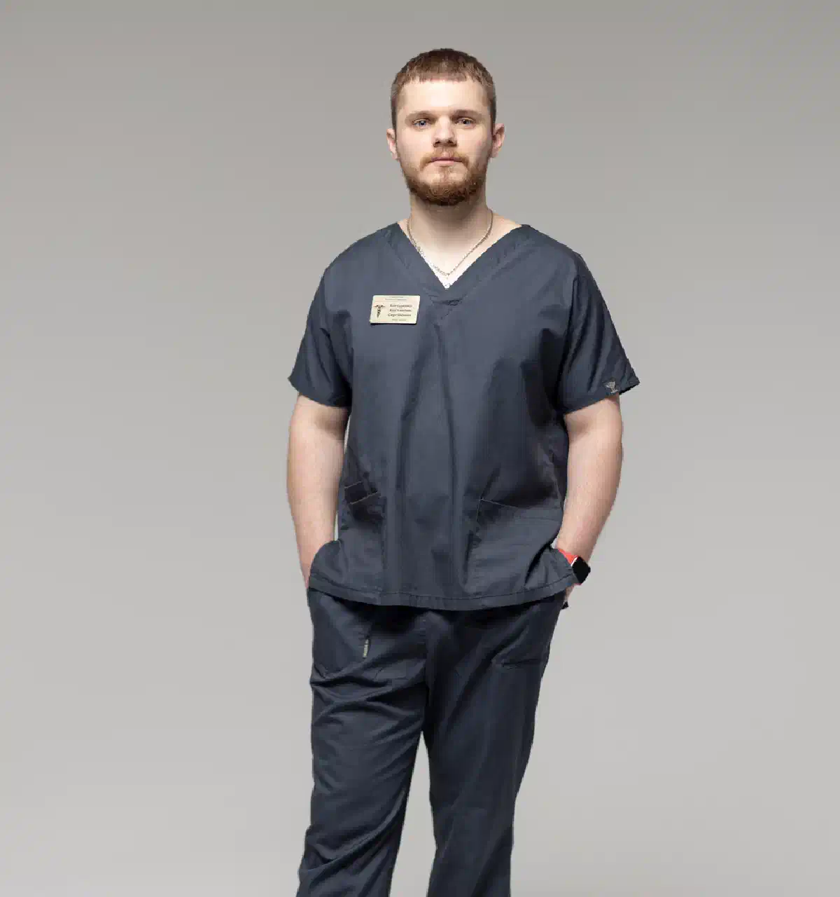

+38(068) 79 72 782
+38(068) 79 72 782Довідка про тверезість у Харкові
Оформлення документа за результатами оцінки стану


Безкоштовна консультація, працюємо цілодобово 24/7
Оформлення документа за результатами оцінки стану

Дата написання: 21 вер. 2026 р.
Останнє оновлення: 22 вер. 2026 р.
Довідка про тверезість у Харкові може знадобитися для підтвердження стану людини на момент медичного обстеження, проходження певних комісій, працевлаштування або надання документа за місцем вимоги. Водночас важливо заздалегідь уточнити, який саме документ необхідний отримувачу: результати обстеження, висновок лікаря, довідка про проходження відповідного огляду або лабораторне підтвердження відсутності алкоголю та інших психоактивних речовин. Саме поняття «довідка про тверезість» використовується досить широко, тому порядок обстеження визначається метою звернення. В одних випадках достатньо огляду фахівця, в інших можуть знадобитися додаткові дослідження. Якщо ви не знаєте, який документ необхідний, консультація нарколога в Харкові допоможе визначити подальший порядок дій.
Під довідкою про тверезість зазвичай розуміють медичний документ, що підтверджує результати проведеного обстеження в межах конкретної мети звернення. Таку довідку не слід сприймати як універсальне підтвердження відсутності алкогольної або наркотичної залежності. Документ може знадобитися під час працевлаштування на окремі види робіт, проходження медичного обстеження, надання документів до певних організацій або в інших ситуаціях, коли необхідно підтвердити результати огляду. Важливо розрізняти стан людини безпосередньо під час обстеження та наявність залежності в анамнезі. Відсутність ознак вживання алкоголю в конкретний момент не дозволяє автоматично виключити захворювання, так само як раніше проведене лікування не означає, що людина перебуває у стані сп’яніння зараз.
Для отримання документа необхідно звертатися до наркологічного закладу, який має можливість провести необхідне обстеження та оформити відповідну медичну документацію. Перед записом уточніть, для якої мети потрібна довідка та чи приймається обраний вид документа організацією, до якої він буде надаватися. Це особливо важливо для професійних медичних оглядів, водійських комісій та інших випадків, де можуть бути встановлені окремі вимоги. Якщо людина раніше проходила лікування алкогольної або наркотичної залежності, звернення до нарколога також дозволяє отримати рекомендації щодо подальшого спостереження та необхідних обстежень.
Оформлення починається з уточнення мети звернення та ідентифікації пацієнта. Потім проводиться медичний огляд. Лікар збирає необхідні відомості, оцінює скарги, загальний стан та обставини, що мають значення для висновку. Залежно від мети обстеження можуть знадобитися лабораторні аналізи або додаткові консультації нарколога в Харкові. Після завершення необхідних етапів медичний документ оформлюється на підставі фактично отриманих даних. Не слід розраховувати на видачу довідки без обстеження лише після передачі паспортних даних або оплати послуги. Документ має відповідати результатам проведеного огляду.
Перелік документів краще уточнити до візиту. Як правило, необхідно мати документ, що дозволяє встановити особу пацієнта. Залежно від призначення довідки можуть знадобитися додаткові відомості, направлення, медичні виписки або результати раніше проведених обстежень. Якщо є документи про лікування алкоголізму або наркотичної залежності, повідомте про це лікарю. За необхідності вони допоможуть оцінити медичний анамнез та уникнути повторення вже проведених досліджень. Точний перелік залежить від мети звернення, тому не варто орієнтуватися виключно на список документів, який використовувався для іншої медичної комісії.
Необхідність огляду визначається видом необхідного документа. Якщо довідка пов’язана з оцінкою вживання алкоголю або інших психоактивних речовин, медичне обстеження дозволяє лікарю отримати дані, необхідні для оформлення висновку. Під час огляду можуть уточнюватися характер і частота вживання алкоголю, лікарські засоби, які приймаються, раніше проведене лікування, скарги та інші відомості. Огляд не слід сприймати лише як формальність. Його завдання — отримати об’єктивну медичну інформацію, на підставі якої лікар зможе оформити документ у межах своєї компетенції.
Не кожному пацієнту потрібен однаковий перелік аналізів. Обсяг обстеження залежить від мети звернення, результатів огляду та медичних показань. За необхідності лікар може рекомендувати дослідження для виявлення алкоголю, його метаболітів або інших психоактивних речовин. У деяких ситуаціях проводиться тест на алкоголь і тест на наркотики, результати якого оцінюються разом з іншими медичними даними. Один лабораторний показник не завжди слід інтерпретувати окремо від клінічної ситуації. За сумнівного або несподіваного результату лікар може рекомендувати додаткове дослідження.
Тестування на алкоголь може використовуватися, якщо для мети обстеження необхідно об’єктивно оцінити наявність алкоголю або відповідних біологічних маркерів. Метод дослідження залежить від конкретної ситуації. Важливо дотримуватися правил підготовки, які повідомив лікар або лабораторія, та не намагатися самостійно змінювати результати за допомогою великої кількості води, лікарських засобів, сорбентів або так званих очисних засобів. Якщо людина нещодавно вживала алкоголь, про це краще повідомити лікарю. Достовірна інформація необхідна для правильної інтерпретації результатів.
В окремих випадках обстеження може включати дослідження на психоактивні речовини. Вид тесту та перелік речовин, що визначаються, залежать від мети медичного обстеження. Позитивний попередній результат не завжди слід розглядати ізольовано. Лікар враховує препарати, які приймаються, медичний анамнез та особливості конкретного дослідження. За необхідності результат може потребувати уточнення. Якщо ви приймаєте призначені лікарем лікарські засоби, повідомте їхні назви перед обстеженням. Самостійно скасовувати лікування заради проходження тесту не слід.
Це залежить від призначення документа та результатів медичного огляду. Для деяких ситуацій лабораторне дослідження може не знадобитися, тоді як в інших воно є важливою частиною обстеження. Рішення про необхідний обсяг діагностики приймається з урахуванням мети звернення. Тому обіцянка заздалегідь оформити довідку без будь-яких аналізів не завжди відповідає реальному порядку обстеження. Якщо аналізи призначені, уточніть у фахівця, для чого вони необхідні, як підготуватися та коли будуть готові результати.
Можливість отримати документ у день звернення залежить від необхідного обсягу обстеження. Якщо достатньо огляду лікаря і всі необхідні дані доступні одразу, оформлення може зайняти менше часу. Якщо потрібні лабораторні аналізи, додаткова консультація або уточнення медичної інформації, документ оформлюється після завершення відповідних етапів. Під час запису можна заздалегідь повідомити, коли саме потрібна довідка. Однак терміновість не повинна призводити до виключення медичних етапів, необхідних для достовірного висновку.
Під час працевлаштування необхідно спочатку з’ясувати, який саме медичний документ запитує роботодавець і чи передбачений відповідний огляд для конкретної професії. Довідка, що підтверджує результати обстеження у нарколога, не завжди замінює повний медичний огляд або інший передбачений документ. Для окремих видів діяльності можуть діяти спеціальні вимоги до стану здоров’я. Якщо роботодавець використовує формулювання «довідка від нарколога» або «довідка про тверезість», краще уточнити точну назву необхідного документа до проходження обстеження.
Під час проходження водійської медичної комісії необхідно орієнтуватися на вимоги до конкретного обстеження, а не лише на побутову назву документа. Довідку про тверезість саму по собі не слід розглядати як автоматичне підтвердження придатності людини до керування транспортним засобом. Медичне рішення приймається за результатами передбаченого обстеження. Якщо вам потрібен сертифікат психіатра-нарколога, заздалегідь уточніть його призначення та порядок отримання, щоб не проходити непотрібні обстеження та не оформлювати документ, який не підходить для комісії.
Якщо документ запитує державна установа, необхідно уточнити його точну назву, зміст та мету надання. Не слід автоматично замінювати необхідний медичний висновок довідкою іншого виду. Документ про проходження обстеження у нарколога, результати лабораторного тестування та висновок медичної комісії можуть мати різне призначення. Перед записом бажано отримати точні вимоги організації, до якої подаватиметься документ. Це дозволяє заздалегідь визначити необхідний обсяг обстеження.
Після лікування алкогольної залежності пацієнт може звернутися для оцінки поточного стану та оформлення медичних документів. Однак факт проходження лікування та поточна відсутність вживання алкоголю — різні медичні обставини. Якщо нещодавно проводилося виведення із запою вдома Харків, лікарю необхідно повідомити дату лікування, тривалість вживання алкоголю, застосовані препарати та подальшу динаміку стану. При тяжкому абстинентному синдромі та необхідності цілодобового спостереження може знадобитися виведення із запою в стаціонарі. Отримання довідки в такій ситуації не повинно ставати пріоритетнішим за лікування та стабілізацію стану.
Сам факт проведеного кодування не є автоматичною підставою для підтвердження поточної тверезості. Для оформлення відповідного медичного документа може знадобитися окремий огляд, а за наявності показань — додаткове обстеження. Довідка про кодування від алкоголізму підтверджує факт проведеного лікувального втручання, тоді як документ про поточний стан вирішує інше завдання. Якщо кодування проводилося медикаментозним методом ( наприклад кодування уколом), повідомте лікарю назву препарату та дату його застосування. Ця інформація може мати значення під час подальшого лікування алкогольної залежності та оцінки стану.
Лікар оцінює відомості, необхідні для конкретної мети обстеження. Уточнюються скарги, медичний анамнез, вживання алкоголю та інших психоактивних речовин, препарати, які приймаються, та раніше проведене лікування. Також оцінюється поточний стан пацієнта. За наявності показань можуть знадобитися лабораторні дослідження або додаткові консультації. Якщо людина нещодавно перенесла виражену алкогольну інтоксикацію і їй проводилася крапельниця від алкоголю, про це бажано повідомити лікарю та, за наявності, надати медичні документи про проведене лікування.
Коректніше говорити не лише про відмову, а й про ситуації, коли видачу документа неможливо завершити одразу. Наприклад, лікарю може знадобитися додаткова інформація, результати аналізів або повторний огляд. Проведене обстеження також не гарантує формулювання, яке заздалегідь хоче отримати пацієнт. Медичний документ має відображати встановлені факти. Якщо виявлено стан, що потребує лікування, фахівець пояснить подальші дії. При тяжкому абстинентному синдромі, судомах, порушенні свідомості, психозі або інших небезпечних симптомах пріоритетом стає медична допомога, а за необхідності — наркологічний стаціонар.
Анонімність лікування алкоголізму та отримання офіційного іменного медичного документа необхідно розглядати окремо. Якщо довідка має підтверджувати результати обстеження конкретної людини, медичному закладу необхідно ідентифікувати пацієнта. Під час лікування залежності конфіденційність медичної інформації зберігає велике значення, однак це не означає, що офіційний документ можна оформити на непідтверджені дані. Якщо раніше лікування проводилося анонімно, заздалегідь уточніть, які записи збереглися та чи можливо на їх підставі оформити необхідний документ.
Вартість довідки про тверезість у Харкові починається від 1500 грн.
| Популярні послуги | Ціна |
|---|---|
| Нарколог Харків | Від 1500 грн |
| Крапельниця від алкоголю | Від 2199 грн |
| Виведення із запою вдома | Від 2199 грн |
| Кодування від алкоголізму | Від 6000 грн |
Якщо документ потрібен терміново, повідомте про це під час запису. За відсутності необхідності в тривалих дослідженнях довідка може бути оформлена швидше, однак точний термін залежить від ситуації. Термінове оформлення не означає видачу документа без фактичного обстеження. Якщо призначені додаткові аналізи, необхідно дочекатися результатів, потрібних лікарю для висновку. За обмежених термінів краще заздалегідь підготувати документи та уточнити вимоги організації, для якої оформлюється довідка. Це знижує ймовірність повторного відвідування.
Поняття «довідка про тверезість» часто використовується як загальне позначення документа, пов’язаного з підтвердженням відсутності ознак вживання алкоголю або інших психоактивних речовин на момент обстеження. Однак офіційне призначення медичного документа визначається тим, яке обстеження було проведено та для якої мети він оформлюється. Довідка або висновок психіатра-нарколога може бути пов’язаний із ширшим медичним обстеженням і не зводиться виключно до визначення факту вживання алкоголю. Тому перед зверненням необхідно уточнити точну назву необхідного документа. Якщо залишаються питання щодо аналізів, лікування або подальшого спостереження, консультація нарколога в Харкові допоможе визначити відповідний порядок обстеження та отримати медичні рекомендації з урахуванням конкретної ситуації.
Телефон для консультації та виклику нарколога додому в Харкові: +38(050-021-69-57)

Статтю перевірено експертом
Могучев Станіслав
Лікар-терапевт, ординатор
Можливо цікава стаття:
Який укол викликає відразу до алкоголю

Так, ми суворо дотримуємося повної конфіденційності на всіх етапах лікування. Інформація про пацієнта, діагноз та проходження терапії не передається третім особам. Звернення до нас не тягне за собою постановку на облік. Ви можете бути впевнені у безпеці та анонімності.
Програма лікування розробляється індивідуально після консультації з фахівцем. Враховуються вид залежності, її тривалість, фізичний та психологічний стан пацієнта. Такий підхід дозволяє підвищити ефективність терапії та знизити ризик зриву. Ми не використовуємо шаблонні рішення.
Так, ми супроводжуємо пацієнтів і після основного курсу лікування. Проводяться консультації, рекомендації щодо адаптації та профілактики рецидивів. За потреби можлива подальша психологічна підтримка. Це допомагає зберегти результат та повернутися до повноцінного життя.
Анонимно

Ну в хлопців просто золоті руки й світла голова, мене капали Олексій та Владислав, буквально за декілька сеансів я наче заново народився, до цього пив більше 3х тижнів, не міг зупинитись, дуже радий що знайшов саме цих спеціалістів, всім рекомендую
Анонимно
В течение нескольких лет я злоупотреблял алкоголь, что привело к увольнению с работы и вызвало у меня мысли о суициде. Понимая, что такой образ жизни неприемлем, я обратился за помощью в клинику “Амбрела”. Здесь я смог преодолеть свою зависимость от спиртного благодаря заботливым и опытным врачам, а также эффективной системе лечения. Спустя более года я полностью избавился от желания употреблять алкоголь, и теперь моя жизнь вернулась в норму. Я даже не приближаюсь к спиртному! Благодарю врачей клиники “Амбрела” за их помощь и заботу.
Анонимно
Я обращался за помощью в различные клиники, пытаясь избавиться от своей зависимости от алкоголя, но без особых успехов. Никак не мог справиться с желанием прибегнуть к бутылке, пока друг не посоветовал мне обратиться в центр “Амбрелла”. Я записался на прием и был поражен заботливым отношением к пациентам. Уже прошло два года, и теперь я смотрю на алкоголь с абсолютной равнодушием, активно занимаюсь спортом и улучшил отношения в семье. Благодаря центру “Амбрелла” моя жизнь была спасена от алкогольной зависимости!
Анонимно
Хочу выразить свою благодарность врачам из центра алкоголизма “Амбрела” за то, что они буквально спасли мою жизнь. В течение последнего года я сильно увлекался питьем, и все это привело к катастрофическим последствиям. Хотя я ходил на терапевтические сеансы, но безрезультатно. Тогда я нашел адрес клиники “Амбрела” в интернете, изучил отзывы и информацию о центре, и записался на прием. Там мне сразу предложили методику лечения, которая помогла не только справиться с физической ломкой, но и психической зависимостью от алкоголя. Не буду распространяться, скажу только одно - после пребывания в этой клинике я стал другим человеком, и навсегда забыл, что такое привкус алкоголя. Больше меня не тянет на это! Я искренне верю, что в центре “Амбрела” трудятся настоящие целители душ!
Анонимно
После сложного развода мой сын начал подавлять свою обиду и горе употреблением алкоголя. Он старался скрывать это от меня, но я, как мать, почувствовала, что что-то не так. В конечном итоге, ситуация стала критической. Моя знакомая посоветовала мне обратиться в клинику “Амбрела”. Я была приятно удивлена их работой! Они помогли сыну преодолеть очередной период злоупотребления алкоголем, и с тех пор прошел уже более года, и он совсем не пьет.
Анонимно
Благодаря вашей помощи, моя семья была спасена. Я с трудом уговорила мужа начать лечение, и последний каплей был пьяное ДТП. К счастью, в аварии никто не пострадал, но это был для него сигнал к действию. Он наконец согласился пройти курс лечения на дому, в стационар не хотел ложиться. Лечение было трудным, и были моменты, когда срыв был настолько близок, но благодаря вашему центру Амбрелла мы справились с этим.
Анонимно
Для меня эта клиника стала настоящим спасением! Долгое время я упорно отказывался от лечения, уверен был, что со мной все в порядке. Но к счастью, семья уговорила меня попробовать. И сегодня я чувствую себя невероятно счастливым, осознавая, что мне абсолютно не нужен алкоголь. Огромное спасибо за помощь и поддержку, которые я получил здесь! Я благодарен вам за новую возможность жить полноценной и счастливой жизнью!
Анонимно
Выражаю благодарность ребятам, которые оказали мне помощь и не отвернулись. Уже 10 месяцев я остаюсь чистой. Благодарю за то, что помогли найти новый путь в моей жизни.
Номер телефону:
+380 (68) 797 27 82
+380 (50) 021 69 57
Адресу наркологічного центра вашого міста уточнюйте за
телефоном
Працюємо: Київ, Одеса, Львів, Харків, Дніпро, Запоріжжя,
Черкасах, Чугуєві, Чорноморську, Кам'янському
Telegram: t.me/umbrellaplus
Графік работы: Цілодобово